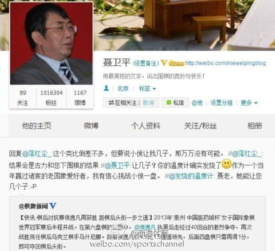

是下围棋赢的吗？@新浪体育:【聂卫平：有信心下国象挑战小侯】详细：网页链接今日中国棋手侯逸凡重夺世界棋后头衔。比赛期间聂卫平多次发微博关注侯逸凡。18日老聂主动转发棋迷的调侃微博：“作为一个当年赢过诸宸的老国象爱好者，我有信心挑战小侯一盘。”并对要被侯逸凡下国象让子的说法“强烈回应”：万万不可能！ 
 网页链接 原来美国人里认为自己是德国后裔的是最多的！
网页链接 原来美国人里认为自己是德国后裔的是最多的！